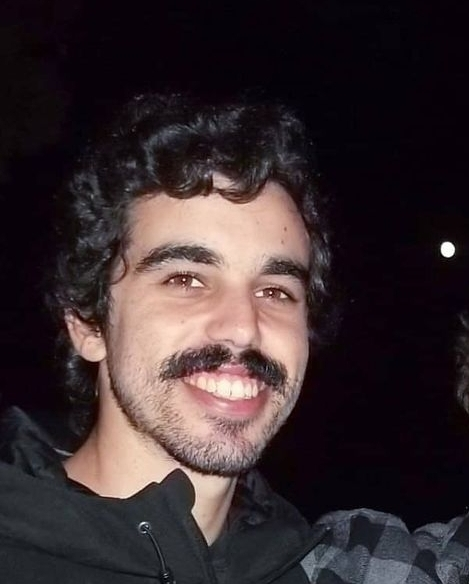

Quem é Guilherme Alves Marques?

Idade : 25
Estado Civil : Single and ready to mingle
A minha história:
Meet Guilherme, a 25-year-old information systems student who leads a double life. By day, he spends his time in the classroom, learning about the latest in technology and data management. But by night, he transforms into a fierce futsal player, hitting the court with a passion that sets him apart from his peers.
Guilherme's love of futsal began when he was just a child. Growing up in a small town, he spent most of his free time playing soccer with his friends. It was there that he developed his speed, agility, and quick reflexes, all of which would later serve him well on the futsal court.
As he got older, Guilherme's passion for soccer only grew. But when he enrolled in college to study information systems, he worried that he wouldn't have time for the sport he loved. That all changed when he discovered futsal, a fast-paced, five-a-side version of soccer that's played on a smaller court.
It wasn't long before Guilherme was recruited to join a local futsal team, where he quickly established himself as a force to be reckoned with. With his lightning-fast footwork and impeccable timing, he quickly became one of the team's star players, leading them to victory time and time again.
But Guilherme's life isn't just about futsal. He also loves to go out and explore the city with his friends, trying out new restaurants and bars and soaking up all that life has to offer. Whether he's studying for a big exam or gearing up for a big game, he knows that there's more to life than just work and play.
For Guilherme, futsal is more than just a sport - it's a way of life. And as he continues to pursue his studies and explore the world around him, he knows that his love of the game will always be there to guide him, both on and off the court.